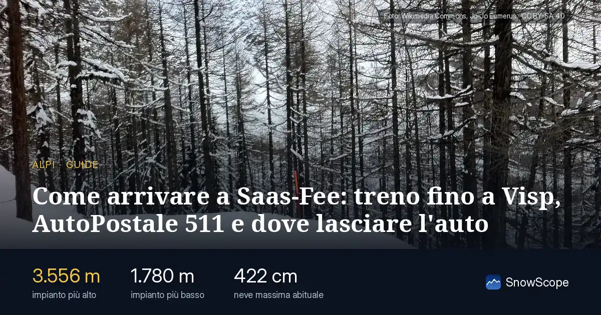

Come arrivare a Saas-Fee: treno fino a Visp, AutoPostale 511 e dove lasciare l'auto
Saas Fee è una località senza auto a 1.780 m circondata da 13 vette oltre i 4.000 m, circondata da quattro passi montani che determinano come arrivarvi. Che veniate in treno e autobus o guidiate la vostra auto, l'ultimo tratto è sempre a piedi o in navetta gratuita del villaggio una volta raggiunto il fondovalle.
Le previsioni neve in tempo reale per Saas Fee nell'app SnowScopeAltezza neve, allerte powder e mappa 3D, gratis.
Treno e autobus: il percorso più veloce da quasi tutti gli aeroporti
Da Zurigo, Ginevra, Basilea e Milano gli aerei scendono con treni fino a Visp nella valle del Rodano. Il viaggio dura circa due ore e mezza da Zurigo. Alla stazione di Visp, l'autobus PostBus linea 511 parte ogni 30 minuti in direzione sud nella valle del Saas e sale fino a Saas Fee. L'intero percorso da un grande aeroporto dura circa tre ore.
Le Ferrovie federali svizzere vendono biglietti Supersaver a prezzo ridotto se prenotate in anticipo. Una volta arrivati al terminal dell'autobus di Saas Fee, il villaggio è abbastanza piccolo da percorrere a piedi, e gli autobus da sci verso gli impianti sono gratuiti per tutti i passeggeri.
In auto: quattro passi, una strada di valle
Se guidate, quattro percorsi portano a Visp e poi a sud verso Saas Fee. Dal nord via Berna, il trenino del Lötschberg trasporta i veicoli attraverso la montagna, con treni in partenza fino a sei volte all'ora in ogni direzione. Da est, il passo del Furka offre una strada aperta. Da sud e dall'Italia, il passo del Sempione si collega alla valle del Rodano. Da ovest, la strada di valle corre lungo il Rodano attraverso Losanna e scende fino a Visp.
A sud di Visp, seguire le indicazioni verso Saas-Almagell. Alla rotonda di Killerhof vicino a Stalden, prendere la seconda uscita verso Saas Fee. A Saas-Grund, girare a destra dopo la chiesa e salire nella valle del Saas. La strada si restringe mentre sale a serpentina.

Parcheggiate all'ingresso, poi viaggiate gratis dentro
Nessuna auto privata entra a Saas Fee stesso. Grandi parcheggi si trovano all'ingresso del villaggio. L'ufficio turistico pubblica informazioni dettagliate sui parcheggi e aggiornamenti su eventuali chiusure temporanee dovute a neve o lavori in corso. I canali di informazione locali pubblicano anche avvisi su accessi.
Una volta parcheggiati, prendete gli autobus locali gratuiti e le navette da sci. Questi includono fermate all'impianto Alpin Express, alla stazione dell'autobus, al parcheggio multipiano e al parcheggio nord. Durante la prestagione (31 ottobre - 18 dicembre 2026) e di nuovo dal 19 dicembre 2026 al 18 aprile 2027, autobus elettrici collegano anche i villaggi vicini come Saas-Grund e Saas-Almagell direttamente a Saas Fee. Gli altri autobus di valle richiedono il pagamento a meno che non abbiate una SaastalCard.
Cosa dicono i numeri: un inverno lungo e profondo
Negli ultimi 46 inverni, Saas Fee a media altitudine (2.668 m) ha raggiunto in media un picco di stagione di 178 cm, con neve al suolo per circa 260 giorni ogni inverno. La neve più profonda di solito cade a marzo. Alla base (1.780 m) i numeri sono inferiori: un picco tipico di 92 cm e 228 giorni di neve, con la maggior parte della neve spesso a febbraio.
Le quote più alte, intorno ai 3.556 m, raccontano una storia diversa. Lì la profondità mediana al picco raggiunge 422 cm, e la neve spesso arriva a fine settembre e persiste fino a inizio luglio. Questo vantaggio di quota è il motivo per cui la località mantiene la neve più a lungo in primavera e inizio estate.
Ritardi dovuti al meteo: pianificate bene il vostro viaggio
I passi del Lötschberg, del Furka e del Sempione possono chiudersi con neve pesante o rischio di valanghe. Se guidate, lasciate tempo per eventuali ritardi e controllate lo stato della strada prima della partenza e di nuovo prima di tornare giù. Lo stesso vale per PostBus 511: le tempeste invernali possono rallentare il viaggio, quindi lasciate tempo extra e abbiate il serbatoio pieno o la batteria carica.
Le leggi sugli pneumatici invernali si applicano a tutti e quattro i passi e gli accessi. Controllate la classificazione e la profondità del battistrada degli pneumatici prima di partire, soprattutto se noleggiate un'auto. La valle e il villaggio stesso sono normalmente accessibili, ma lo sgombero della neve è un compito costante a questa quota.
Miglior momento per arrivare e cosa portare
Novembre è inizio stagione; la neve in base è ancora in costruzione (gli inverni passati mostrano un tipico 13 cm a metà novembre). Media quota e pendii superiori ne hanno di più, ma le condizioni possono essere magre e variabili. A dicembre la base di solito ha 35 cm, e i pendii superiori 150 cm, rendendo la località più affidabile. Gennaio attraverso marzo offrono la neve più profonda e stabile.
Che viaggiate in treno o in auto, portate strati caldi, protezione solare e una bottiglia d'acqua. Se guidate, portate rifornimenti per la giornata: carburante, acqua e snack. Il viaggio non è lungo, ma il meteo di montagna cambia velocemente e potreste essere ritardati.
Consigli per sciatori
- Prendete il treno? Acquistate il vostro biglietto fino a Saas Fee sul sito SBB e salite direttamente su PostBus 511 alla stazione di Visp senza cambiare piattaforma.
- Guidate il trenino del Lötschberg in inverno? Controllate i tempi di attesa e prenotate una fascia in anticipo sul sito BLS per evitare ritardi.
- Lasciate l'auto ai parcheggi di ingresso per tutta la permanenza. Gli autobus gratuiti dentro il villaggio e verso gli impianti rendono un secondo viaggio in città non necessario e vi fanno risparmiare sul parcheggio.
- Gli pneumatici invernali sono obbligatori su tutti e quattro i passi montani da novembre ad aprile. Se noleggiate, confermate che l'auto abbia pneumatici invernali con certificazione 3PMSF su tutte e quattro le ruote o portate catene e calzini da neve.
- Escursioni fuoripista e su ghiacciaio: consultate l'ultimo bollettino valanghe SLF su slf.ch e assumete sempre una guida alpina qualificata.
Su questi numeri
Le altezze neve delle località sono la neve più alta sui pendii superiori alla data indicata; sono stime per un'area, non una misura in un punto. Le previsioni possono cambiare. Leggi sempre il bollettino valanghe ufficiale prima del fuoripista.
Bollettini valanghe ufficiali: WSL-SLF
Cita questo articolo
Per ricerca, didattica o stampa: numeri e grafici sono liberamente riutilizzabili con licenza CC BY 4.0 citando così.
SnowScope (2026), Come arrivare a Saas-Fee: treno fino a Visp, AutoPostale 511 e dove lasciare l'auto, https://snowscope.app/blog/it/2026/11/how-to-get-to-saas-fee-train-postbus-car-free.html, consultato il 2026-11-09
SnowScope (Atlas Labs). (2026, November 9). Come arrivare a Saas-Fee: treno fino a Visp, AutoPostale 511 e dove lasciare l'auto. SnowScope snow reports. https://snowscope.app/blog/it/2026/11/how-to-get-to-saas-fee-train-postbus-car-free.html
BibTeX
@misc{snowscope2026howtogettosaasfeetrainpo,
author = {{SnowScope (Atlas Labs)}},
title = {Come arrivare a Saas-Fee: treno fino a Visp, AutoPostale 511 e dove lasciare l'auto},
year = {2026},
month = nov,
howpublished = {\url{https://snowscope.app/blog/it/2026/11/how-to-get-to-saas-fee-train-postbus-car-free.html}},
note = {Published 2026-11-09 14:31 UTC; accessed 2026-11-09}
}· CC BY 4.0 · Metodi, dati e strumenti →
Saas Fee: neve e temperatura per quota, quest'inverno vs lo scorso (strumenti) →
Segui Saas Fee
Gratis: un messaggio quando arriva la neve e il meteo ogni mattina.
Altri bollettini neve

Bonneval-sur-Arc si trova a 1.794 m nella valle dell'Arc, chiusa dal Col dell'Iseran in inverno. Lo spessore di neve varia da 99 cm in basso a 335 cm in alto. Dati da 46 inverni passati, novembre 2026.

St. Anton e Ski Arlberg lungo l'inverno: l'altezza neve abituale ogni mese a tre quote, da 46 inverni passati.